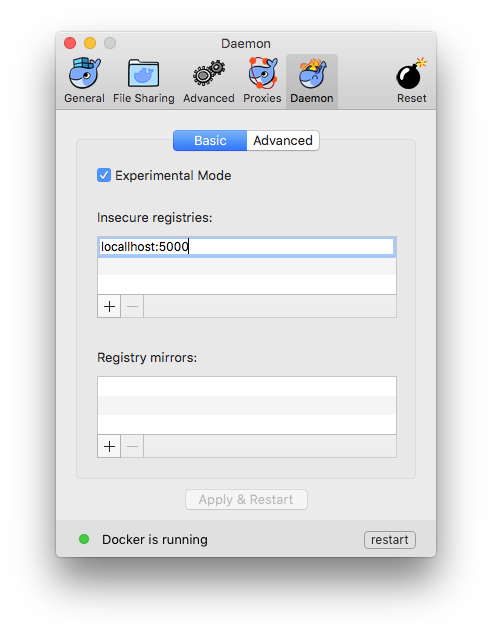
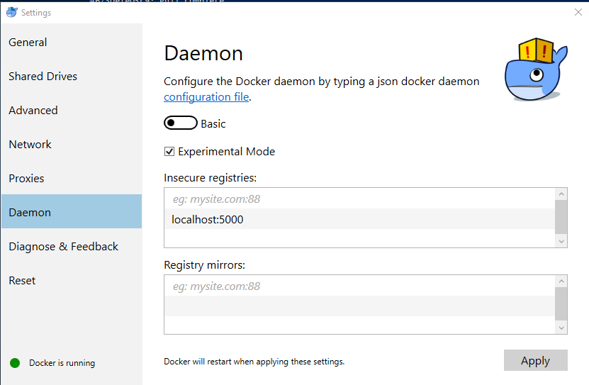

At the end of this lab, you will have:
Installed Docker on your own device.
Run som commands to check if Docker is installed correctly.
First we must download Docker for your own device, get the right packaged for your platform:
For previous OS versions use play-with-docker.
Double-click on Docker.dmg for Mac and InstallDocker.msi for Windows to start the install process.
When the installation finishes, Docker starts automatically. On the Mac a whale appears in the top status bar and for Windows the whale appears in the notification area. This indicates that Docker is running and accessible from a terminal.
Open a command-line terminal (for Windows try PowerShell or even better install Cygwin) and try out some Docker commands. Or if you use play-with-docker press +ADD NEW INSTANCE.
docker version to check that you have the latest release installed.$ docker version
Client:
Version: 17.03.1-ce
API version: 1.27
Go version: go1.7.5
Git commit: c6d412e
Built: Tue Mar 28 00:40:02 2017
OS/Arch: darwin/amd64
Server:
Version: 17.03.1-ce
API version: 1.27 (minimum version 1.12)
Go version: go1.7.5
Git commit: c6d412e
Built: Fri Mar 24 00:00:50 2017
OS/Arch: linux/amd64
Experimental: true
docker run hello-world to verify that Docker is pulling images and running as expected.$ docker run hello-world
Unable to find image 'hello-world:latest' locally
latest: Pulling from library/hello-world
78445dd45222: Already exists
Digest: sha256:c5515758d4c5e1e838e9cd307f6c6a0d620b5e07e6f927b07d05f6d12a1ac8d7
Status: Downloaded newer image for hello-world:latest
Hello from Docker!
This message shows that your installation appears to be working correctly.
To generate this message, Docker took the following steps:
1. The Docker client contacted the Docker daemon.
2. The Docker daemon pulled the "hello-world" image from the Docker Hub.
3. The Docker daemon created a new container from that image which runs the
executable that produces the output you are currently reading.
4. The Docker daemon streamed that output to the Docker client, which sent it
to your terminal.
To try something more ambitious, you can run an Ubuntu container with:
$ docker run -it ubuntu bash
Share images, automate workflows, and more with a free Docker ID:
https://cloud.docker.com/
For more examples and ideas, visit:
https://docs.docker.com/engine/userguide/
In the next lab, we will learn how to run our first application with Docker.
At the end of this lab, you will have:
Seen Docker in action.
Started your first containers.
Docker is a client-server application.
The Docker Engine (or “daemon”)
The Docker client
Docker Hub Registry
In your Docker environment, just run the following command:
$ docker run busybox echo hello world
...
hello world
That was our first container !!
We used one of the smallest, simplest linux images available: busybox.
Busybox combines tiny versions of many common UNIX utilities into a single small executable.
Busybox is typically used in embedded systems (phones, routers…).
We ran a single process and echo’ed hello world.
Let’s run a more exciting container:
$ docker run -it ubuntu
This is a brand new container.
It runs a bare-bones, no-frills ubuntu system.
-it is shorthand for -i -t.
-i tells Docker to connect us to the container’s stdin.
-t tells Docker that we want a pseudo-terminal.
Let’s do something in our container. Try to run figlet in our container. Figlet is a funny program that changes letters into ASCI characters.
root@04c0bb0a6c07:/# figlet hello
bash: figlet: command not found
Alright, we need to install it.
An observation
Let’s check how many packages are installed here (number of packages may be different).
root@04c0bb0a6c07:/# dpkg -l | wc -l
103
dpkg -l lists the packages installed in our container
wc -l counts them
If you have a Debian or Ubuntu machine, you can run the same command and compare the results.
We want figlet, so let’s update Ubuntu…
root@04c0bb0a6c07:/# apt-get update
...
Fetched 1514 kB in 14s (103 kB/s)
Reading package lists... Done
and install it:
root@04c0bb0a6c07:/# apt-get install figlet
Reading package lists... Done
...
update-alternatives: using /usr/bin/figlet-figlet to provide /usr/bin/figlet (figlet) in auto mode
One minute later, figlet is installed! Let’s try figlet:
root@04c0bb0a6c07:/# figlet hello
_ _ _
| |__ ___| | | ___
| _ \ / _ \ | |/ _ \
| | | | __/ | | (_) |
|_| |_|\___|_|_|\___/
Just exit the shell, like you would usually do. (E.g. with ^D or exit)
root@04c0bb0a6c07:/# exit
Our container is now in a stopped state.
It still exists on disk, but all compute resources have been freed up.
What if we start a new container, and try to run figlet again?
$ docker run -it ubuntu
root@b13c164401fb:/# figlet
bash: figlet: command not found
We started a brand new container.
The basic Ubuntu image was used, and figlet is not here. This is called “Stateless” the state is not kept when the container is not there anymore.
We will see in the next chapters how to bake a custom image with figlet.
Our first containers were interactive.
We will now see how to:
Run a non-interactive container.
Run a container in the background.
List running containers.
Check the logs of a container.
Stop a container.
List stopped containers.
We will run a small custom container, more about this container will explain in lab 5.
This container just displays the time every second.
$ docker run hcscompany/clock
...
Fri Feb 20 00:28:53 UTC
Fri Feb 20 00:28:54 UTC
Fri Feb 20 00:28:55 UTC
...
This container will run forever.
To stop it, press ^C.
Docker has automatically downloaded the image hcscompany/clock.
This image is a user image, created by hcscompany.
We will hear more about user images (and other types of images) later.
Containers can be started in the background, with the -d flag (daemon mode):
$ docker run -d hcscompany/clock
47d677dcfba4277c6cc68fcaa51f932b544cab1a187c853b7d0caf4e8debe5ad
We don’t see the output of the container.
But don’t worry: Docker collects that output and logs it!
Docker gives us the ID of the container.
How can we check that our container is still running?
With docker ps, just like the UNIX ps command, lists running processes.
$ docker ps
CONTAINER ID IMAGE ... CREATED STATUS ...
47d677dcfba4 hcscompany/clock ... 2 minutes ago Up 2 minutes ...
Docker tells us:
The (truncated) ID of our container.
The image used to start the container.
That our container has been running (Up) for a couple of minutes.
Other information (COMMAND, PORTS, NAMES) that we will explain later.
Let’s start two more containers.
$ docker run -d hcscompany/clock
57ad9bdfc06bb4407c47220cf59ce21585dce9a1298d7a67488359aeaea8ae2a
$ docker run -d hcscompany/clock
068cc994ffd0190bbe025ba74e4c0771a5d8f14734af772ddee8dc1aaf20567d
Check that docker ps correctly reports all 3 containers.
docker psTo see only the last container that was started:
$ docker ps -l
CONTAINER ID IMAGE ... CREATED STATUS ...
068cc994ffd0 hcscompany/clock ... 2 minutes ago Up 2 minutes ...
To see only the ID of containers:
$ docker ps -q
068cc994ffd0
57ad9bdfc06b
47d677dcfba4
Combine those flags to see only the ID of the last container started!
$ docker ps -lq
068cc994ffd0
We told you that Docker was logging the container output.
Let’s see that now.
$ docker logs 068
Fri Feb 20 00:39:52 UTC
Fri Feb 20 00:39:53 UTC
...
We specified a prefix of the full container ID.
You can, of course, specify the full ID.
The logs command will output the entire logs of the container. (Sometimes, that will be too much. Let’s see how to address that.)
To avoid being spammed with eleventy pages of output, we can use the --tail option:
$ docker logs --tail 3 068
Fri Feb 20 00:55:35 UTC
Fri Feb 20 00:55:36 UTC
Fri Feb 20 00:55:37 UTC
Just like with the standard UNIX command tail -f, we can follow the logs of our container:
$ docker logs --tail 1 --follow 068
Fri Feb 20 00:57:12 UTC
Fri Feb 20 00:57:13 UTC
This will display the last line in the log file.
Then, it will continue to display the logs in real time.
Use ^C to exit.
There are two ways we can terminate our detached container.
Killing it using the docker kill command.
Stopping it using the docker stop command.
The first one stops the container immediately, by using the KILL signal.
The second one is more graceful. It sends a TERM signal, and after 10 seconds, if the container has not stopped, it sends KILL.
Reminder: the KILL signal cannot be intercepted, and will forcibly terminate the container.
Let’s stop one of those containers:
$ docker stop 47d6
47d6
This will take 10 seconds:
Docker sends the TERM signal;
the container doesn’t react to this signal (it’s a simple Shell script with no special signal handling);
10 seconds later, since the container is still running, Docker sends the KILL signal;
this terminates the container.
Let’s be less patient with the two other containers and kill the remaining containers:
$ docker kill 068 57ad
068
57ad
The stop and kill commands can take multiple container IDs.
Those containers will be terminated immediately (without the 10 seconds delay). Let’s check that our containers don’t show up anymore:
$ docker ps
We can also see stopped containers, with the -a (--all) option.
$ docker ps -a
CONTAINER ID IMAGE ... CREATED STATUS
068cc994ffd0 hcscompany/clock ... 21 min. ago Exited (137) 3 min. ago
57ad9bdfc06b hcscompany/clock ... 21 min. ago Exited (137) 3 min. ago
47d677dcfba4 hcscompany/clock ... 23 min. ago Exited (137) 3 min. ago
5c1dfd4d81f1 hcscompany/clock ... 40 min. ago Exited (0) 40 min. ago
b13c164401fb ubuntu ... 55 min. ago Exited (130) 53 min. ago
We have started containers in the foreground, and in the background. In this lab, we will see how to:
Put a container in the background.
Attach to a background container to bring it to the foreground.
Restart a stopped container.
The distinction between foreground and background containers is arbitrary. From Docker’s point of view, all containers are the same.
All containers run the same way, whether there is a client attached to them or not. It is always possible to detach from a container, and to reattach to a container.
Analogy: attaching to a container is like plugging a keyboard and screen to a physical server.
If you have started an interactive container (with option -it), you can detach from it.
The “detach” sequence is ^P^Q (ctrl-P ctrl-Q)
Otherwise you can detach by killing the Docker client.
(But not by hitting ^C, as this would deliver SIGINT to the container.)
What does -it stand for?
-t means “allocate a terminal.”
-i means “connect stdin to the terminal.”
You don’t like ^P^Q? No problem!
You can change the sequence with docker run --detach-keys.
This can also be passed as a global option to the engine.
Start a container with a custom detach command:
$ docker run -it --detach-keys ctrl-x,x hcscompany/clock
Detach by hitting ^X x. (This is ctrl-x then x, not ctrl-x twice!)
Check that our container is still running:
$ docker ps -l
You can attach to a container by docker attach <containerID>
The container must be running.
There can be multiple clients attached to the same container.
If you don’t specify --detach-keys when attaching, it defaults back to ^P^Q.
Try it on our previous container:
$ docker attach $(docker ps -lq)
Check that ^X x doesn’t work, but ^P ^Q does. Let’s try ^P ^Q for now.
Warning: if the container was started without -it…
You won’t be able to detach with ^P^Q.
If you hit ^C, the signal will be proxied to the container.
Remember: you can always detach by killing the Docker client.
Use docker attach if you intend to send input to the container.
If you just want to see the output of a container, use docker logs --tail 1 --follow <containerID>, we used this in our previous lab.
Use docker attach again and stop the container with ^C.
When a container has exited, it is in stopped state. It can then be restarted with the start command:
$ docker start <yourContainerID>
The container will be restarted using the same options you launched it with.
You can re-attach to it if you want to interact with it:
$ docker attach <yourContainerID>
Use docker ps -a to identify the container ID of a previous hcscompany/clock container, and try those commands.
In this lab, we will explain:
What is an image.
What is a layer.
The various image namespaces.
How to search and download images.
Image tags and when to use them.
An image is a collection of files + some meta data. (Technically: those files form the root filesystem of a container.)
Images are made of layers, conceptually stacked on top of each other.
Each layer can add, change, and remove files.
Images can share layers to optimize disk usage, transfer times, and memory use.
Example:
CentOS
JRE
Tomcat
Dependencies
Application JAR
Configuration
An image is a read-only filesystem.
A container is an encapsulated set of processes running in a read-write copy of that filesystem.
To optimize container boot time, copy-on-write is used instead of regular copy.
docker run starts a container from a given image.
If an image is read-only, how do we change it?
We don’t.
We create a new container from that image.
Then we make changes to that container.
When we are satisfied with those changes, we transform them into a new layer.
A new image is created by stacking the new layer on top of the old image.
There is a special empty image called scratch.
The docker import command loads a tarball into Docker.
The imported tarball becomes a standalone image.
That new image has a single layer.
With docker commit
Saves all the changes made to a container into a new layer.
Creates a new image (effectively a copy of the container).
With docker build
Performs a repeatable build sequence.
This is the preferred method!
We will explain both methods in the next labs.
There are three namespaces:
Official images e.g. ubuntu, busybox …
User (and organizations) images e.g. hcscompany/clock
Self-hosted images e.g. registry.example.com:5000/my-private/image
Let’s explain each of them.
1 - Root namespace
The root namespace is for official images. They are put there by ., but they are generally authored and maintained by third parties.
Those images include:
Small, “swiss-army-knife” images like busybox.
Distro images to be used as bases for your builds, like ubuntu, fedora…
Ready-to-use components and services, like redis, postgresql… User namespace
2 - The user namespace
Holds images for Docker Hub users and organizations. For example: hcscompany/clock
The Docker Hub user is:
hcscompany
The image name is:
clock
3 - Self-Hosted namespace
This namespace holds images which are not hosted on Docker Hub, but on third party registries.
They contain the hostname (or IP address), and optionally the port, of the registry server.
For example: localhost:5000/wordpress
localhost:5000 is the host and port of the registry
wordpress is the name of the image
Images can be stored:
On your local Docker host.
In a Docker registry.
You can use the Docker client to download (pull) or upload (push) images.
To be more accurate: you can use the Docker client to tell a Docker server to push and pull images to and from a registry.
Let’s look at what images are on our host now.
$ docker images
REPOSITORY TAG IMAGE ID CREATED SIZE
node latest efe7b69d7b71 2 months ago 660 MB
httpd latest 6587355a8c4f 2 months ago 176 MB
busybox latest 7968321274dc 3 months ago 1.11 MB
ubuntu latest 104bec311bcd 3 months ago 129 MB
hcscompany/clock latest 12068b93616f 2 years ago 2.43 MB
We cannot list all images on a remote registry, but we can search for a specific keyword:
$ docker search zookeeper
NAME DESCRIPTION STARS OFFICIAL AUTOMATED
jplock/zookeeper Builds a docker image for Zookeeper versio... 159 [OK]
zookeeper Apache ZooKeeper is an open-source server ... 132 [OK]
mesoscloud/zookeeper ZooKeeper 70 [OK]
digitalwonderland/zookeeper Latest Zookeeper - clusterable 12 [OK]
springxd/zookeeper A Docker image that can run a ZooKeeper se... 6 [OK]
elevy/zookeeper ZooKeeper configured to execute an ensembl... 6 [OK]
debezium/zookeeper Zookeeper image required when running the ... 3 [OK]
“Stars” indicate the popularity of the image.
“Official” images are those in the root namespace.
“Automated” images are built automatically by the Docker Hub. (This means that their build recipe is always available.)
There are two ways to download images.
Explicitly, with docker pull.
Implicitly, when executing docker run and the image is not found locally.
Let’s pull an image:
$ docker pull debian:jessie
jessie: Pulling from library/debian
6d827a3ef358: Pull complete
Digest: sha256:72f784399fd2719b4cb4e16ef8e369a39dc67f53d978cd3e2e7bf4e502c7b793
Status: Downloaded newer image for debian:jessie
As seen previously, images are made up of layers.
Docker has downloaded all the necessary layers.
In this example: :jessie indicates which exact version of Debian we would like. It is a version tag.
Images can have tags.
Tags define image versions or variants.
docker pull ubuntu will refer to ubuntu:latest.
The :latest tag is generally updated often.
Don’t specify tags:
When doing rapid testing and prototyping.
When experimenting.
When you want the latest version.
Do specify tags:
When recording a procedure into a script.
When going to production.
To ensure that the same version will be used everywhere.
To ensure repeatability later.
In the next lab we tag an image.
We’ve learned how to:
Understand images and layers.
Understand Docker image namespacing.
Search and download images.
In this lab, we will create our first container image.
It will be a basic distribution image, but we will pre-install the package figlet.
We will:
Create a container from a base image.
Install software manually in the container, and turn it into a new image.
Learn about new commands: docker commit, docker tag, and docker diff.
Building Images Interactively
As we have seen, the images on the Docker Hub are sometimes very basic. How do we want to construct our own images?
As an example, we will build an image that has figlet.
First, we will do it manually with docker commit.
Then, in an upcoming lab, we will use a Dockerfile and docker build.
Our base will be the ubuntu image.
Start an Ubuntu container:
$ docker run -it ubuntu
root@<yourContainerId>:\#
Run the command apt-get update to refresh the list of packages available to install.
Then run the command apt-get install figlet to install the program we are interested in.
root@<yourContainerId>:\# apt-get update && apt-get install figlet
...
Unpacking figlet (2.2.5-2) ...
Setting up figlet (2.2.5-2) ...
update-alternatives: using /usr/bin/figlet-figlet to provide /usr/bin/figlet (figlet) in auto mode
root@b7b80a21718c:/#
Type exit at the container prompt to leave the interactive session.
Now let’s run docker diff to see the difference between the base image and our container, in our case
$ docker diff <yourContainerId>
C /etc
C /etc/alternatives
A /etc/alternatives/figlet
A /etc/alternatives/figlet.6.gz
C /root
A /root/.bash_history
C /tmp
...
| Symbol | Description |
|---|---|
| A | A file or directory was added |
| D | A file or directory was deleted |
| C | A file or directory was changed |
Docker tracks filesystem changes, as explained before:
An image is read-only.
When we make changes, they happen in a copy of the image.
Docker can show the difference between the image, and its copy.
For performance, Docker uses copy-on-write systems.
(i.e. starting a container based on a big image doesn’t incur a huge copy.)
The docker commit command will create a new layer with those changes, and a new image using this new layer.
$ docker commit <yourContainerId>
sha256:<newImageId>
The output of the docker commit command will be the ID for your newly created image.
We can run this image:
$ docker run -it <newImageId>
root@fcfb62f0bfde:/# figlet hello
_ _ _
| |__ ___| | | ___
| _ \ / _ \ | |/ _ \
| | | | __/ | | (_) |
|_| |_|\___|_|_|\___/
after that exit the container.
Referring to an image by its ID is not convenient. Let’s tag it instead. We can use the tag command:
$ docker tag <newImageId> figlet
But we can also specify the tag as an extra argument to commit:
$ docker commit <yourContainerId> figlet
And then run it using its tag:
$ docker run -it figlet
What’s next?
Manual process = bad.
Automated process = good.
In the next lab, we will learn how to automate the build process by writing a Dockerfile.
We will build a container image automatically, with a Dockerfile.
At the end of this lab, you will be able to:
Write a Dockerfile.
Build an image from a Dockerfile.
A Dockerfile is a build recipe for a Docker image.
It contains a series of instructions telling Docker how an image is constructed.
The docker build command builds an image from a Dockerfile.
Our Dockerfile must be in a new, empty directory.
Create a directory to hold our Dockerfile.
$ mkdir myimage
Create a Dockerfile inside this directory.
$ cd myimage
$ vi Dockerfile
Of course, you can use any other editor of your choice, if you are using a Windows device.
Type this into our Dockerfile:
FROM ubuntu
RUN apt-get update
RUN apt-get install figlet
FROM indicates the base image for our build.
Each RUN line will be executed by Docker during the build.
Our RUN commands must be non-interactive. (No input can be provided to Docker during the build.)
In many cases, we will add the -y flag to apt-get.
Save our file, then execute:
$ docker build -t figlet:v1 .
-t indicates the tag to apply to the image.
. indicates the location of the build context.
(We will talk more about the build context later; but to keep things simple: this is the directory where our Dockerfile is located.)
:v1 tag it with a version number.
What happens when we build the image? The output of docker build looks like this:
$ docker build -t figlet:v1 .
Sending build context to Docker daemon 2.048 kB
Step 1/3 : FROM ubuntu
---> e54ca5efa2e9
Step 2/3 : RUN apt-get update
---> Running in 840cb3533193
...
---> 7257c37726a1
Removing intermediate container 840cb3533193
Step 3/3 : RUN apt-get install figlet
---> Running in 2b44df762a2f
...
---> f9e8f1642759
Removing intermediate container 2b44df762a2f
Successfully built f9e8f1642759
Successfully tagged figlet:v1
The output of the RUN commands has been omitted. Let’s explain what this output means:
Sending build context to Docker daemon 2.048 kB
The build context is the . directory given to docker build.
It is sent (as an archive) by the Docker client to the Docker daemon.
This allows to use a remote machine to build using local files.
Be careful (or patient) if that directory is big and your link is slow.
The next step is:
Step 2/3 : RUN apt-get update
---> Running in 840cb3533193
(...output of the RUN command...)
---> 7257c37726a1
Removing intermediate container 840cb3533193
A container (840cb3533193) is created from the base image.
The RUN command is executed in this container.
The container is committed into an image (7257c37726a1).
The build container (840cb3533193) is removed.
The output of this step will be the base image for the next one.
Step 3 is like step 2.
The caching system
If you run the same build again, it will be instantaneous. Why?
After each build step, Docker takes a snapshot of the resulting image.
Before executing a step, Docker checks if it has already built the same sequence.
Docker uses the exact strings defined in your Dockerfile, so:
RUN apt-get install figlet cowsay is different from RUN apt-get install cowsay figlet
RUN apt-get update is not re-executed when the mirrors are updated.
You can force a rebuild with docker build --no-cache.
The resulting image is not different from the one produced manually.
$ docker run -ti figlet:v1
root@91f3c974c9a1:/# figlet hello
_ _ _
| |__ ___| | | ___
| _ \ / _ \ | |/ _ \
| | | | __/ | | (_) |
|_| |_|\___|_|_|\___/
The history command lists all the layers composing an image.
For each layer, it shows its creation time, size, and creation command.
When an image was built with a Dockerfile, each layer corresponds to a line of the Dockerfile.
$ docker history figlet:v1
IMAGE CREATED CREATED BY SIZE COMMENT
694e4c34b249 13 minutes ago /bin/sh -c apt-get install figlet 1.45MB
9f66bb25c374 13 minutes ago /bin/sh -c apt-get update 38.2MB
f7b3f317ec73 13 days ago /bin/sh -c #(nop) CMD ["/bin/bash"] 0B
<missing> 13 days ago /bin/sh -c mkdir -p /run/systemd && echo '... 7B
<missing> 13 days ago /bin/sh -c sed -i 's/^#\s*\(deb.*universe\... 2.76kB
<missing> 13 days ago /bin/sh -c rm -rf /var/lib/apt/lists/* 0B
<missing> 13 days ago /bin/sh -c set -xe && echo '#!/bin/sh' >... 745B
<missing> 13 days ago /bin/sh -c #(nop) ADD file:141408db9037263... 117MB
Most Dockerfile arguments can be passed in two forms:
plain string: RUN apt-get install figlet
JSON list: RUN ["apt-get", "install", "figlet"]
Let’s change our Dockerfile as follows:
FROM ubuntu
RUN apt-get update
RUN ["apt-get", "install", "figlet"]
Then build the new Dockerfile.
$ docker build -t figlet:v2 .
Compare the new history:
$ docker history figlet:v2
IMAGE CREATED CREATED BY SIZE COMMENT
aa4000a75080 About an hour ago apt-get install figlet 1.02 MB
240990a28931 About an hour ago /bin/sh -c apt-get update 38.3 MB
ebcd9d4fca80 6 days ago /bin/sh -c #(nop) CMD ["/bin/bash"] 0 B
<missing> 6 days ago /bin/sh -c mkdir -p /run/systemd && echo '... 7 B
<missing> 6 days ago /bin/sh -c sed -i 's/^#\s*\(deb.*universe\... 2.76 kB
<missing> 6 days ago /bin/sh -c rm -rf /var/lib/apt/lists/* 0 B
<missing> 6 days ago /bin/sh -c set -xe && echo '#!/bin/sh' >... 745 B
<missing> 6 days ago /bin/sh -c #(nop) ADD file:d14b493577228a4... 118 MB
JSON syntax specifies an exact command to execute.
String syntax specifies a command to be wrapped within /bin/sh -c "...".
In this lab, we will learn about two important Dockerfile commands: CMD and ENTRYPOINT.
Those commands allow us to set the default command to run in a container.
When people run our container, we want to greet them with a nice hello message, and using a custom font.
For that, we will execute: figlet -f script hello
-f script tells figlet to use a fancy font.
hello is the message that we want it to display.
We adding CMD to our Dockerfile. Our new Dockerfile will look like this:
FROM ubuntu
RUN apt-get update
RUN ["apt-get", "install", "figlet"]
CMD figlet -f script hello
CMD defines a default command to run when none is given.
It can appear at any point in the file.
Each CMD will replace and override the previous one.
As a result, while you can have multiple CMD lines, it is useless.
Let’s build it:
$ docker build -t figlet .
...
Successfully built 042dff3b4a8d
And run it:
$ docker run figlet
_ _ _
| | | | | |
| | _ | | | | __
|/ \ |/ |/ |/ / \_
| |_/|__/|__/|__/\__/
If we want to get a shell into our container (instead of running figlet), we just have to specify a different program to run:
$ docker run -it figlet bash
root@7ac86a641116:/
We specified bash.
It replaced the value of CMD.
We want to be able to specify a different message on the command line, while retaining figlet and some default parameters.
In other words, we would like to be able to do this:
# DO RUN THIS COMMAND NOW, IT ENDS IN AN ERROR !!!
$ docker run figlet salut
_
| |
, __, | | _|_
/ \_/ | |/ | | |
\/ \_/|_/|__/ \_/|_/|_/
We will use the ENTRYPOINT verb in Dockerfile. Add ENTRYPOINT to your Dockerfile. Our new Dockerfile will look like this:
FROM ubuntu
RUN apt-get update
RUN ["apt-get", "install", "figlet"]
ENTRYPOINT ["figlet", "-f", "script"]
ENTRYPOINT defines a base command (and its parameters) for the container.
The command line arguments are appended to those parameters.
Like CMD, ENTRYPOINT can appear anywhere, and replaces the previous value.
Why did we use JSON syntax for our ENTRYPOINT?
When CMD or ENTRYPOINT use string syntax, they get wrapped in /bin/sh -c.
To avoid this wrapping, you must use JSON syntax.
What if we used ENTRYPOINT with string syntax : docker run figlet salut
This would run the following command in the figlet image:sh -c "figlet -f script" salut
Build and test our image. Let’s build it:
$ docker build -t figlet .
...
Successfully built 36f588918d73
And run it:
$ docker run figlet salut
_
| |
, __, | | _|_
/ \_/ | |/ | | |
\/ \_/|_/|__/ \_/|_/|_/
Great success!
What if we want to define a default message for our container? Then we will use ENTRYPOINT and CMD together.
ENTRYPOINT will define the base command for our container.
CMD will define the default parameter(s) for this command.
They both have to use JSON syntax.
Our new Dockerfile will look like this:
FROM ubuntu
RUN apt-get update
RUN ["apt-get", "install", "figlet"]
ENTRYPOINT ["figlet", "-f", "script"]
CMD ["hello world"]
ENTRYPOINT defines a base command (and its parameters) for the container.
If we don’t specify extra command-line arguments when starting the container, the value of CMD is appended.
Otherwise, our extra command-line arguments are used instead of CMD.
Let’s build it:
$ docker build -t figlet .
...
Successfully built 6e0b6a048a07
And run it:
$ docker run figlet
_ _ _ _
| | | | | | | | |
| | _ | | | | __ __ ,_ | | __|
|/ \ |/ |/ |/ / \_ | | |_/ \_/ | |/ / |
| |_/|__/|__/|__/\__/ \/ \/ \__/ |_/|__/\_/|_/
$ docker run figlet hola mundo
_ _
| | | | |
| | __ | | __, _ _ _ _ _ __| __
|/ \ / \_|/ / | / |/ |/ | | | / |/ | / | / \_
| |_/\__/ |__/\_/|_/ | | |_/ \_/|_/ | |_/\_/|_/\__/
What if we want to run a shell in our container?
We cannot just do docker run figlet bash because that would just tell figlet to display the word “bash.”
We use the –entrypoint parameter:
$ docker run -it --entrypoint bash figlet
root@b3ad7919177f:/#
So far, we have installed things in our container images by downloading packages. We can also copy files from the build context to the container that we are building.
Remember: the build context is the directory containing the Dockerfile. In this chapter, we will learn a new Dockerfile keyword: COPY
We want to build a container that compiles a basic “Hello world” program in C. Here is the program, hello.c:
int main ()
{ puts("Hello, world!"); return 0;
}
Let’s first create a new directory for examle hello and than download this file in there.
(hint: wget hcs-company.github.io/docker/labs/hello.c)
On Debian and Ubuntu, the package build-essential will get us a compiler.
When installing it, don’t forget to specify the -y flag, otherwise the build will fail (since the build cannot be interactive).
Then we will use COPY to place the source file into the container.
FROM ubuntu
RUN apt-get update
RUN apt-get install -y build-essential
COPY hello.c /
RUN make hello
CMD /hello
Testing our C program
Create hello.c and Dockerfile in the same direcotry.
Run docker build -t hello . in this directory. This may give a warning.
Run docker run hello , you should see Hello, world!.
Success!
COPY and the build cacheRun the build again.
Now, modify hello.c and run the build again.
Docker can cache steps involving COPY.
Those steps will not be executed again if the files haven’t been changed.
Details:
You can COPY whole directories recursively.
Older Dockerfiles also have the ADD instruction. It is similar but can automatically extract archives.
If we really wanted to compile C code in a compiler, we would:
Place it in a different directory, with the WORKDIR instruction.
Even better, use the gcc official image.
You are already familiar with one command, docker images. You can also remove images, tag and untag them. Also we learn how to push and pull a image to a local registry.
First let build the new figlet v3 from Dockerfile, so that we have more versions.
$ docker build -t figlet:v3 .
Let’s start with removing the image figlet version 1 (figlet:v1) that takes too much disk space:
$ docker rmi figlet:v1
Error response from daemon: conflict: unable to remove repository reference "figlet:v1" (must force) - container 3b8931ffdacd is using its referenced image bbc0e5eb5777
Docker complains that there are containers using this image. How is this possible? We thought that all our containers are gone. Actually, Docker keeps track of all containers, even those that have stopped:
$ docker ps -a
CONTAINER ID IMAGE COMMAND CREATED STATUS PORTS NAMES
74ed5559950b figlet "bash" 5 hours ago Exited (127) 5 seconds ago stupefied_colden
025bc7941f8d figlet "bash" 5 hours ago Exited (0) 17 minutes ago determined_mestorf
2a4897f417e6 figlet "/bin/sh -c 'figle..." 5 hours ago Exited (0) 18 minutes ago infallible_euler
We can now delete the container:
$ docker rm 74ed5559950b
74ed5559950b
and the image:
$ docker rmi figlet:v1
Untagged: figlet:v1
Deleted: sha256:1deb0689407271616d779920b479c2f1fcacb704f7d2b1a155f30e53cb63754f
Deleted: sha256:78564bb1cdb863ad490ba272d04b5c1bf60bb390bd3a9d9aa6ce5e140d597bc3
Deleted: sha256:ed08aaa4b5b884fd1270c3171709063a941bb0cf2f9e8201fc5166be3e406b1e
docker tag helps us to tag images.
We have a lot of versions of figlet built, but latest still points to the old v2.
$ docker images | grep figlet
figlet v2 bbc0e5eb5777 2 days ago 170 MB
figlet v3 bbc0e5eb5777 2 days ago 170 MB
figlet latest b7fa8e20196b 2 days ago 170 MB
Let’s change that by re-tagging latest to v4:
$ docker tag figlet:v4 figlet:latest
$ docker images | grep figlet
figlet v2 bbc0e5eb5777 2 days ago 170 MB
figlet v3 bbc0e5eb5777 2 days ago 170 MB
figlet latest b7fa8e20196b 2 days ago 170 MB
figlet v4 b7fa8e20196b 2 days ago 170 MB
Both v4 and latest point to the same image ID.
A registry is a stateless, highly scalable server side application that stores and lets you distribute Docker images. You can use a public registry or a local registry.
Docker expects all registries to run on HTTPS. But for this lab we will run a version on HTTP. The Docker Engine needs to be explicitly setup to use HTTP for the insecure registry.
In Docker for Mac, the Preferences menu lets you set the address for an insecure registry under the Daemon panel:

In Docker for Windows, the Settings menu lets you set the address for an insecure registry under the Daemon panel:

Let us spin now up a local registry:
$ docker run -p 5000:5000 --name registry -d registry:2
docker push is used to publish images to registries.
To instruct where we want to publish, we need to append registry address to repository name:
First tag the figlet images:
$ docker tag figlet:v4 127.0.0.1:5000/figlet:v4
After that push the images to the local registry:
$ docker push 127.0.0.1:5000/figlet:v4
The push refers to a repository [127.0.0.1:5000/figlet]
78171efc0c5e: Pushed
5154177609a7: Pushed
33f1a94ed7fc: Pushed
b27287a6dbce: Pushed
47c2386f248c: Pushed
2be95f0d8a0c: Pushed
2df9b8def18a: Pushed
v4: digest: sha256:dd02511304a21786165baead16b0f140d573a693e925215b99254585d4931898 size: 1779
Enter the following commands to clean up figlet version 4:
$ docker rmi 127.0.0.1:5000/figlet:v4
See that the figlet images are removed.
$ docker images
We can now download the image using the docker pull command:
$ docker pull 127.0.0.1:5000/figlet:v4
v4: Pulling from figlet
Digest: sha256:c472a7ec8ab2b0db8d0839043b24dbda75ca6fa8816cfb6a58e7aaf3714a1423
Status: Image is up to date for 127.0.0.1:5000/figlet
and see that it is back again:
$ docker images
Well Done !!!!
The Docker quiz is a collection of questions, created by the instructor, they are asked in real-time, to al the “players”. During gameplay, on the screen of the “players” devices, the questions and the 4 multiple choice answers are displayed. The “player” needs to click or tap on the rectangle representing the correct answer.
The Docker quiz is made on Quizizz. When Quizizz is launched, it will ask an unique PIN, which is show on the instructor screen, this PIN is randomly generated by the system. After that enter your name.
Let’s play the Docker Quiz(izz) !!